using-spatial-annotations.RmdThis vignette exemplifies how to use Spatial Annotations in SPATA2. It builds on the spatial annotations created in the vignette creating spatial annotations.
# load required packages
library(SPATA2)
library(tidyverse)
# load SPATA2 inbuilt data
object_t313 <- loadExampleObject("UKF313T", process = TRUE, meta = TRUE)Spatial annotations annotate space which can be directly translated
into the image regardless of the annotation was drawn based on
histomorphological features (Image Annotations) or numeric and grouping
features (Numeric- and GroupAnnotations). The annotated space can be
used to obtain image sections cropped to only include the annotated
area. getSpatialAnnotation() extracts an object of class
SpatialAnnotation.
# obtain the IDs of all spatial annotations
getSpatAnnIds(object_t313)## [1] "necrotic_area" "necrotic_center" "necrotic_edge"
## [4] "necrotic_edge2" "necrotic_edge2_transgr"
necrotic_area <-
getSpatialAnnotation(
object = object_t313,
id = "necrotic_area",
add_image = T
)
# print summary
necrotic_area## An object of class SpatialAnnotation
## ID: necrotic_area
## Sample: UKF313T
## Memory: 1.53 Mb
## Tags: necrotic, compr
## Area information:
## outer : 286 vertices
## inner1 : 235 vertices
## Cropped image dimensions (WxHxC): 238 x 250 x 3
# print slot names
slotNames(necrotic_area)## [1] "parent_name" "area" "id" "image" "image_info"
## [6] "misc" "sample" "tags" "version"By default, the image is cropped in a way that only the annotation is included.
# visualize from the SPATA2 object, with expand = 0
plotSpatialAnnotations(object_t313, ids = "necrotic_area", expand = 0, fill = NA)
# expand = 0 is how the image is extracted when extracting the spatial annotation
# (in SPATA2, images are plotted upside down to fit into the cartesian coordinate system)
plot(EBImage::flip(necrotic_area@image))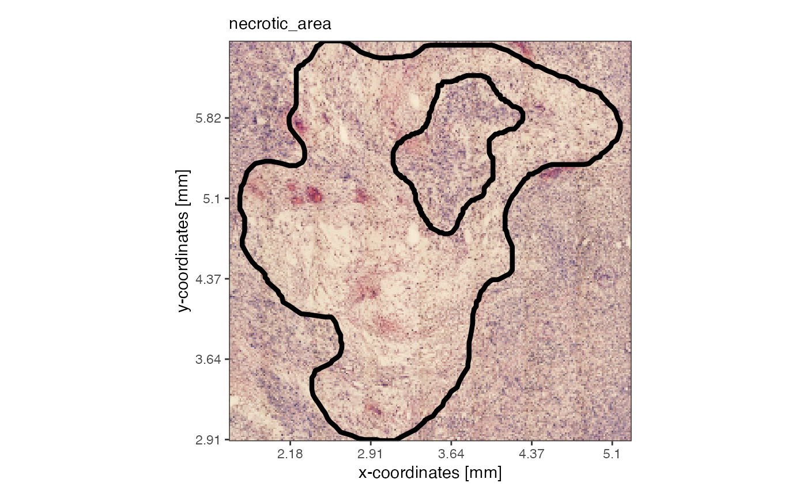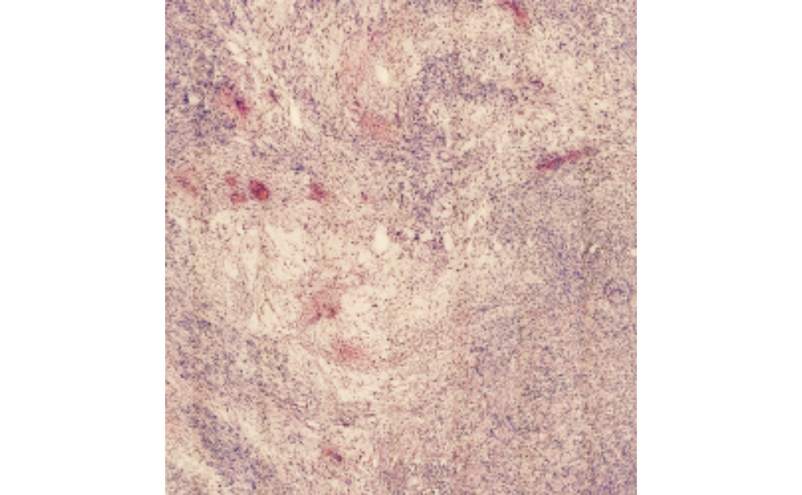
The argument expand can be used with
getSpatialAnnotation(), too, in order to manipulate with
how much extra space the image is cropped. This works in pixel as well
as with SPATA2’s SI unit system.
# visualize from the SPATA2 object, with expand = 0
plotSpatialAnnotations(
object = object_t313,
ids = "necrotic_area",
expand = "500um",
fill = NA,
sb_dist = "500um",
sb_pos = c("4.5mm", "3mm")
)
necrotic_area_expanded <-
getSpatialAnnotation(
object = object_t313,
id = "necrotic_area",
add_image = T,
expand = "500um"
)
expanded_image <- EBImage::flip(necrotic_area_expanded@image)
plot(expanded_image)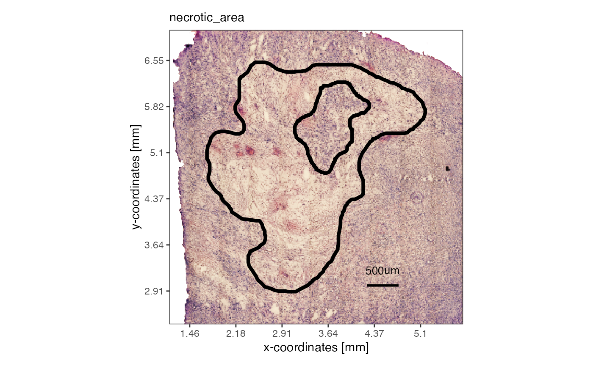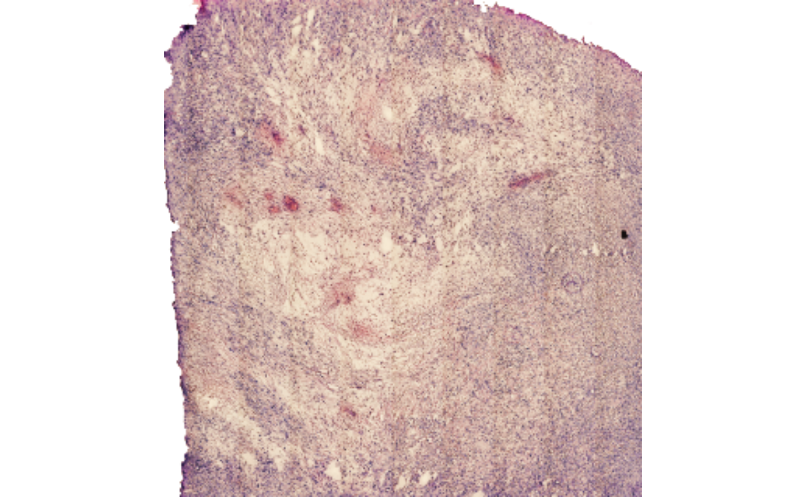
The borders of spatial annotations can be used as reference points to analyze expression of numeric features (e.g. gene expression) as a function of distance to the annotated areas. The figure below illustrates the concept.
necrotic_ids <- c("necrotic_area", "necrotic_edge", "necrotic_edge2")
# obtain distance data relative to spatial annotations (SA) with getCoordsDfSA()
coords_df <-
getCoordsDfSA(object_t313, ids = necrotic_ids, unit = "mm", binwidth = "200um", core0 = T)
# add distance to necrosis as meta feature to the SPATA2 object
# to make them accessible for other functions
object_t313 <-
addFeatures(object_t313, feature_df = coords_df[,c("barcodes", "dist", "bins_dist")], overwrite = T)
# create ggproto layer for further surface plots
necrotic_outline <-
ggpLayerSpatAnnOutline(object_t313, ids = necrotic_ids, incl_edge = T, fill = "grey")
sas_screning <-
ggpLayerScreeningDirectionSAS(object_t313, ids = necrotic_ids, line_size = 0.75)
# show plots
plotImage(object_t313) +
necrotic_outline +
sas_screning
plotSurface(object_t313, color_by = "dist", pt_clrsp = "plasma") +
necrotic_outline +
sas_screning +
labs(color = "Dist [mm]")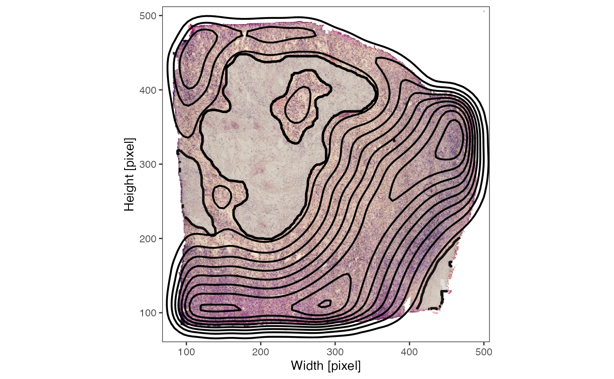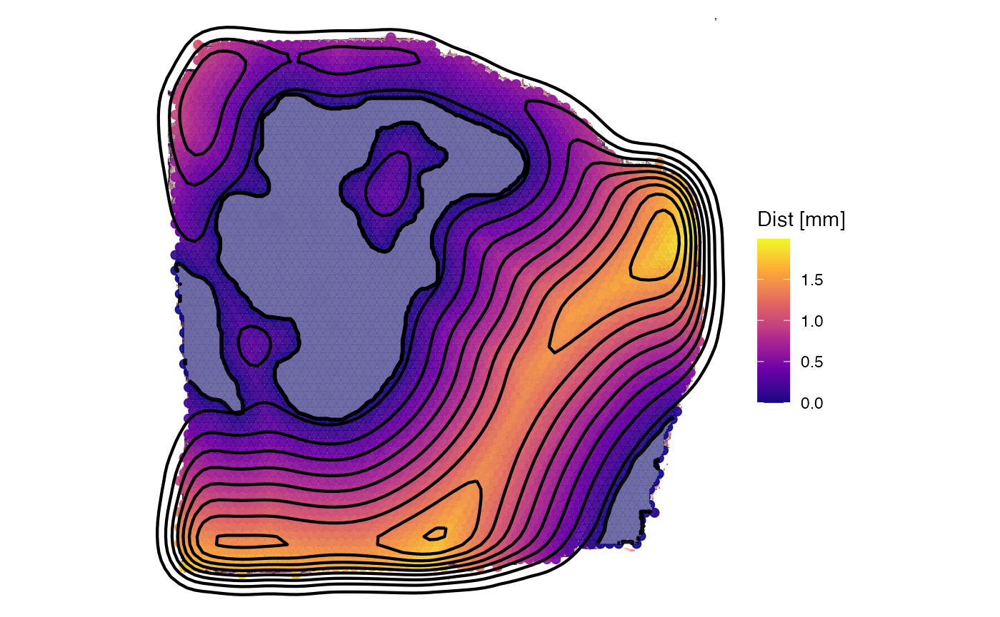
Inferring expression as function of distance is part of the Spatial
Gradient Screening algorithm (SAS). Therefore, functions related to this
concept feature the acronym Sas such as
plotSasLineplot() or plotSasHeatmap().
plotSurface(object_t313, color_by = "HM_HYPOXIA", display_image = F, outline = T, pt_clrsp = "BuPu") +
necrotic_outline +
sas_screning
plotSasLineplot(object_t313, ids = necrotic_ids, variables = "HM_HYPOXIA", line_color = "blue") +
labs(x = "Distance to Necrotic Borders [mm]")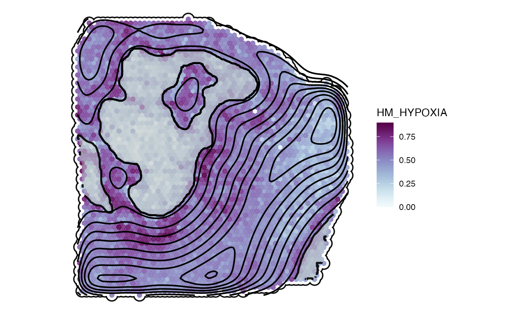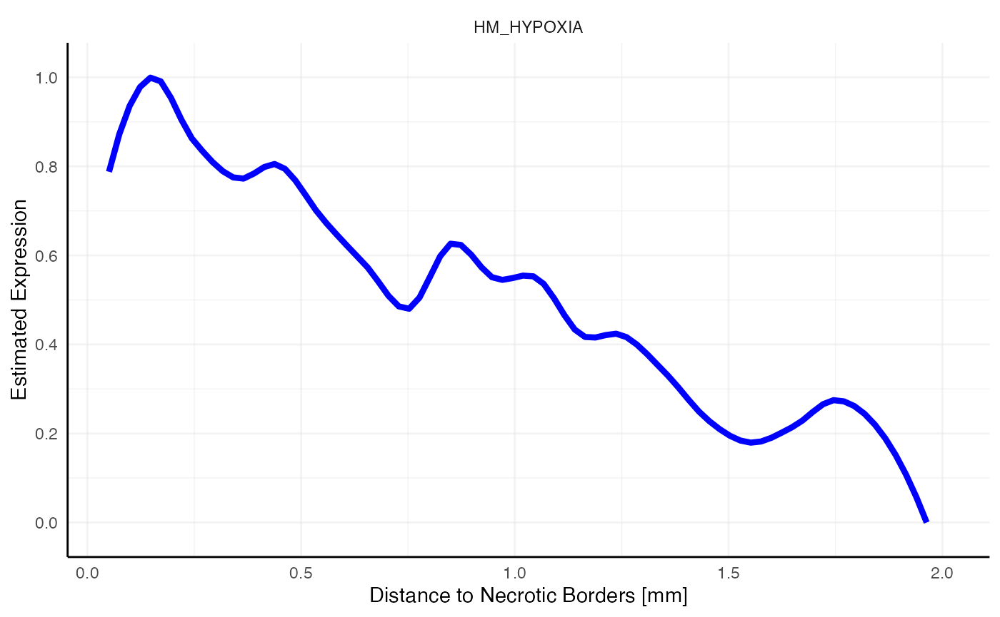
If the number of features displayed becomes too high for a lineplot
switch to plotSasHeatmap().
# use spatialAnnotationScreening() to identify non random genes
# and genes with specific expression pattern related to your spatial annotations
associated_with_necrosis <-
c("SLC2A1", "ADM", "ERO1A", "CD44", "STC2", "CA12", "VEGFA", "NDRG1", "TMEM158", "LOX")
repelled_by_necrosis <-
c("CD74", "CLU", "IFITM3", "C1QA", "C1QB", "CD68", "SELENOP", "SEC61B", "HLA-DRB1", "EMC6")
plotSasHeatmap(object_t313, variables = associated_with_necrosis, ids = necrotic_ids, clrsp = "BuPu") +
labs(x = "Distance to Necrotic Borders [mm]")
plotSasHeatmap(object_t313, variables = repelled_by_necrosis, ids = necrotic_ids, clrsp = "Reds 3") +
labs(x = "Distance to Necrotic Borders [mm]")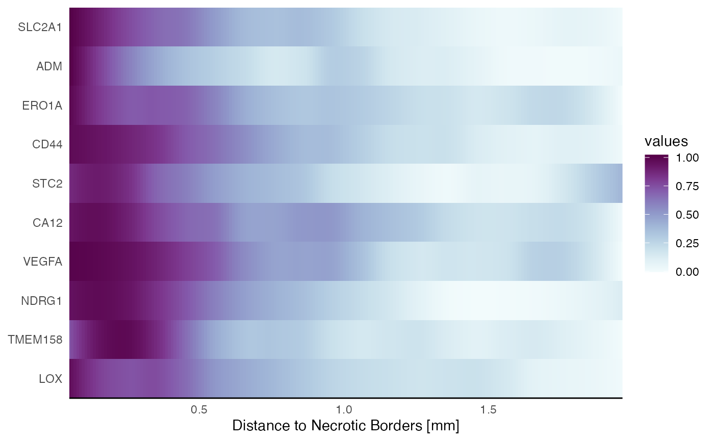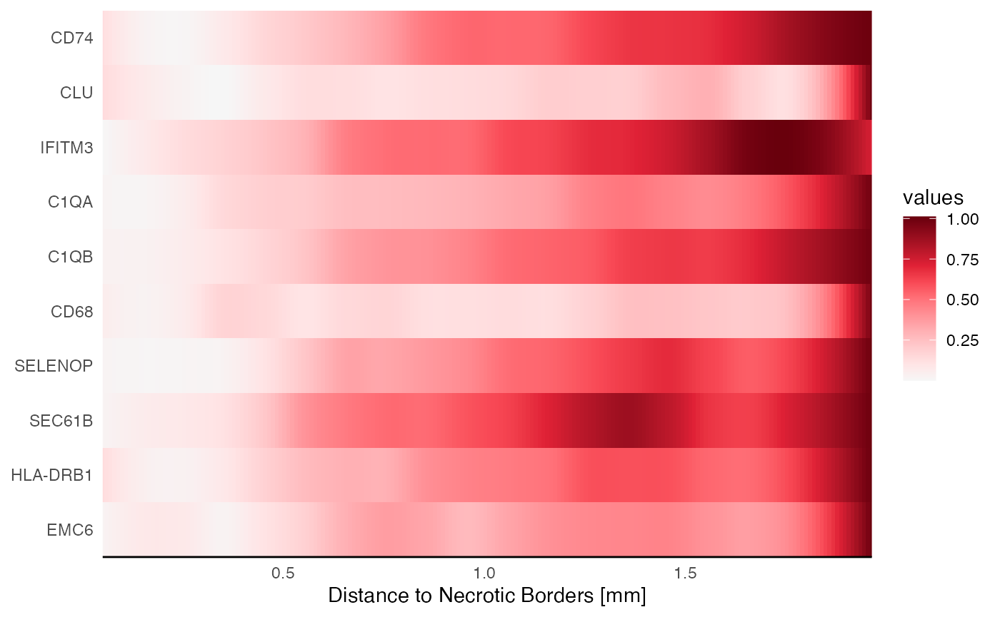
The concept of Spatial Annotation Screening differentiates three types of areas when working with spatial annotations:
distance.By default distance is the maximum of distances between
the objects observations (here, barcoded spots) to their respective
closest annotation border. In the case of the three necrotic annotations
the maximum distance is approximately 2mm.
## [1] 1.99This is referred to as distance to edge (dte) as
observations up to the tissue’s edge are included. If your hypothesis
requires a specific distance parameter up to which the expression
gradient is inferred use the distance parameter. Fig.6
visualizes the differences in the set up.
sas_areas <- color_vector(clrp = "npg", names = c("core", "environment", "periphery"))
necrotic_outline_transp <-
ggpLayerSpatAnnOutline(object_t313, ids = necrotic_ids, incl_edge = T, fill = NA)
# rel_loc = location of each observation relative to the set up
plotSurface(coords_df, color_by = "rel_loc", clrp_adjust = sas_areas) +
necrotic_outline_transp +
labs(subtitle = "`distance` = 'dte'")
# the scenario changes when distance is specified
coords_df2 <-
getCoordsDfSA(object_t313, ids = necrotic_ids, distance = "1.5mm")
plotSurface(coords_df2, color_by = "rel_loc", clrp_adjust = sas_areas) +
necrotic_outline_transp +
labs(subtitle = "`distance` = 1.5mm")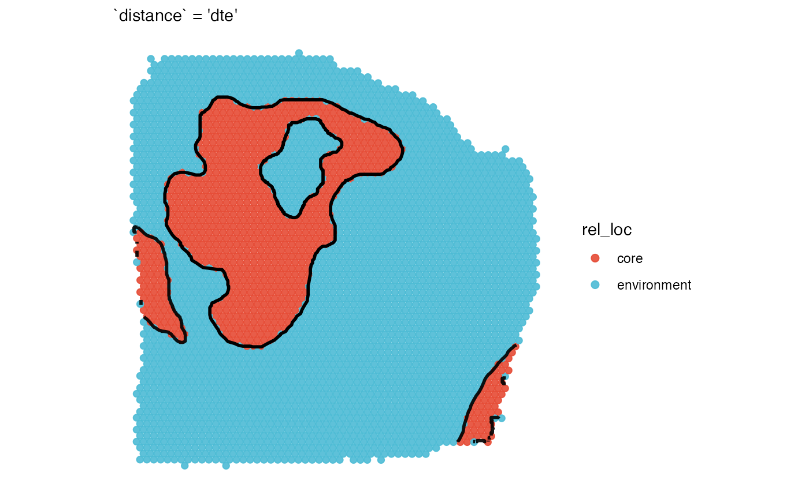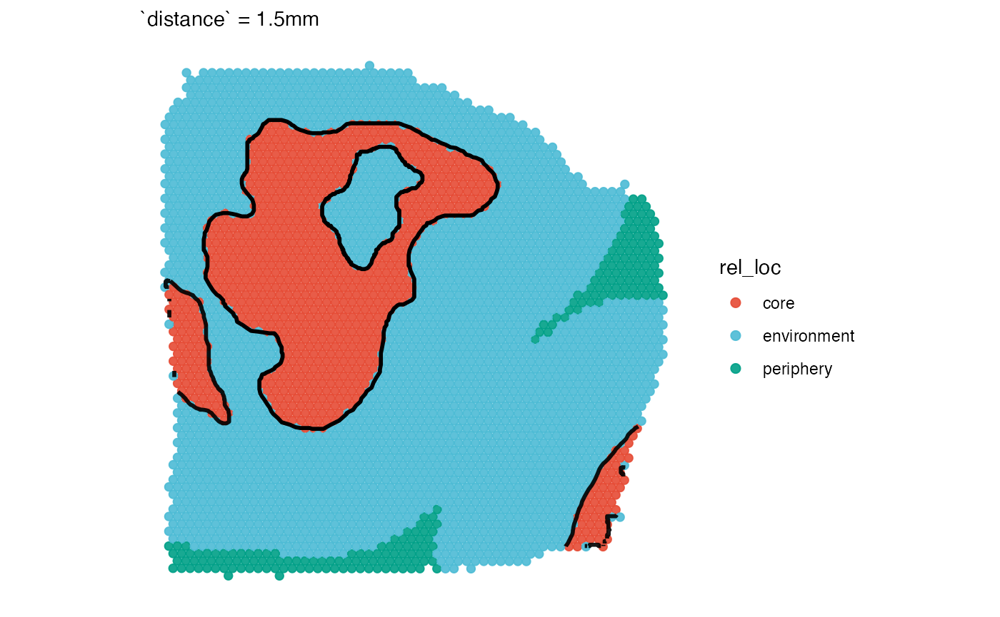
Another aspect to consider is the core parameter.
Depending on whether it is set to core = TRUE or
core = FALSE the inside of the annotation is included in
the gradient. It depends on the circumstances and your hypothesis
whether it makes sense to include the core or not. In case of the
necrotic areas we decided to set core = FALSE since we were
particularly interested in the reaction of the surrounding of the
necrotic areas.
You can relate spatial annotations to observations that do not live
in the SPATA2 object but in a separate data.frame. Only
requirements are that the data.frame contains x- and y- coordinates
scaled to the resolution of the active image (if there is one) and a
variable called barcodes identifying each observation
uniquely.
# get sc deconvolution data
sc_input <- example_data$sc_input_lmu_mci
sc_input## # A tibble: 4,356 × 5
## barcodes x y cell_type spot_id
## <chr> <dbl> <dbl> <fct> <chr>
## 1 cell1 442. 378. Neurons AAACAAGTATCTCCCA-1
## 2 cell2 412. 140. Mural cells AAACAGAGCGACTCCT-1
## 3 cell3 412. 137. Astrocytes AAACAGAGCGACTCCT-1
## 4 cell4 413. 142. Astrocytes AAACAGAGCGACTCCT-1
## 5 cell5 412. 138. Microglia AAACAGAGCGACTCCT-1
## 6 cell6 424. 447. Monocytes/Macrophages AAACATTTCCCGGATT-1
## 7 cell7 425. 452. Microglia AAACATTTCCCGGATT-1
## 8 cell8 426. 450. Microglia AAACATTTCCCGGATT-1
## 9 cell9 492. 341. OPCs AAACCCGAACGAAATC-1
## 10 cell10 494. 346. OPCs AAACCCGAACGAAATC-1
## # ℹ 4,346 more rows
# load mouse brain sectionas as example data
object_mouse <- loadExampleObject("LMU_MCI", process = TRUE, meta = TRUE)
hemispheres <- ggpLayerTissueOutline(object_mouse)
injuries <- ggpLayerSpatAnnOutline(object_mouse, ids = c("inj1", "inj2"))
# left plot
plotSurface(object_mouse, color_by = "clusters") +
injuries
# right plot
plotSurface(sc_input, color_by = "cell_type", pt_clrp = "tab20b", pt_size = 0.5) +
injuries +
hemispheres 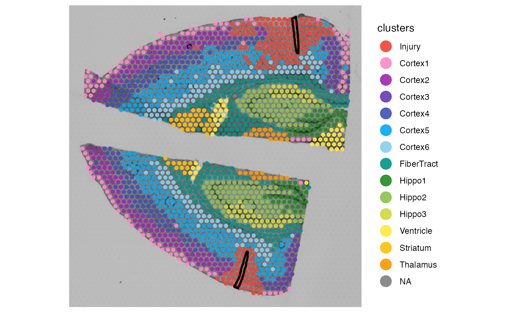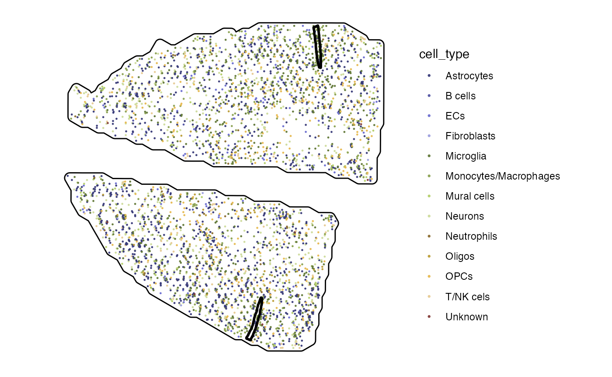
Use sc_input as input for argument
coords_df of getCoordsDfSA(). This way, not
the coordinates stored in the SPATA2 objects are used but
the ones you provide.
# relate to spatial annotations ...
sc_input_sa <-
getCoordsDfSA(
object = object_mouse,
ids = c("inj1", "inj2"),
resolution = "300um",
coords_df = sc_input
) %>%
filter(rel_loc != "core")
# ... which adds the spatial information to the data.frame
sc_input_sa## # A tibble: 4,092 × 15
## barcodes x y tissue_section_id cell_type spot_id tissue_section dist
## <chr> <dbl> <dbl> <chr> <fct> <chr> <chr> <dbl>
## 1 cell1 442. 378. tissue_section_2 Neurons AAACAA… tissue_sectio… 0.502
## 2 cell10 494. 346. tissue_section_2 OPCs AAACCC… tissue_sectio… 1.18
## 3 cell100 408. 375. tissue_section_2 Oligos AACGGA… tissue_sectio… 0.659
## 4 cell1000 370. 171. tissue_section_1 Monocyte… ATGCCG… tissue_sectio… 0.366
## 5 cell1001 371. 175. tissue_section_1 Oligos ATGCCG… tissue_sectio… 0.415
## 6 cell1002 344. 442. tissue_section_2 Neurons ATGCTC… tissue_sectio… 1.14
## 7 cell1003 345. 441. tissue_section_2 Monocyte… ATGCTC… tissue_sectio… 1.13
## 8 cell1004 346. 445. tissue_section_2 Astrocyt… ATGCTC… tissue_sectio… 1.11
## 9 cell1005 347. 441. tissue_section_2 Astrocyt… ATGCTC… tissue_sectio… 1.10
## 10 cell1006 481. 419. tissue_section_2 OPCs ATGCTT… tissue_sectio… 0.567
## # ℹ 4,082 more rows
## # ℹ 7 more variables: border <chr>, dist_unit <chr>, bins_dist <fct>,
## # rel_loc <fct>, angle <dbl>, bins_angle <fct>, id <fct>
ct <- c("Monocytes/Macrophages", "Microglia", "Neurons", "Astrocytes")
ggplot(sc_input_sa) +
geom_bar(mapping = aes(x = bins_dist, fill = cell_type), position = "stack") +
scale_color_add_on(aes = "fill", variable = sc_input_sa$cell_type, clrp = "tab20b") +
theme_classic()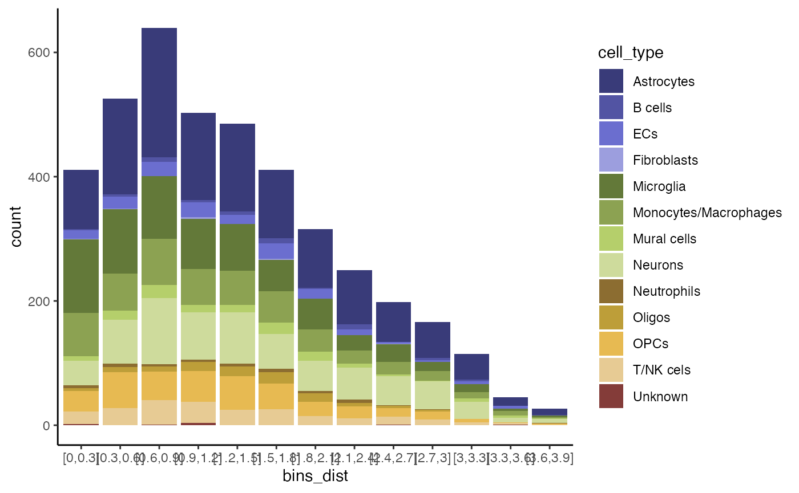